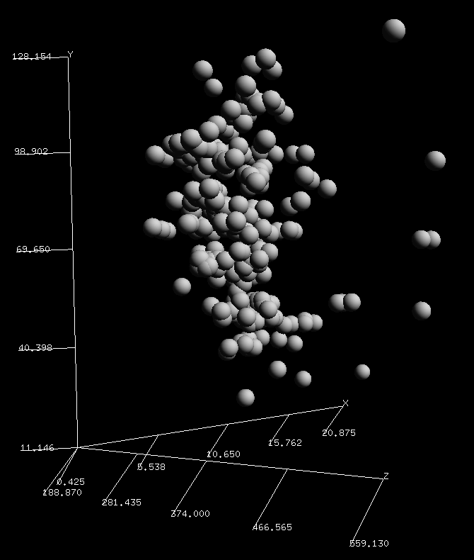

Day 5: Using k-means clustering as a ... crayon?

The mtcars dataset is 50 years old. This is the 21st Century, so let's look at Electric Vehicles with k-means clustering. The results are shocking!
Punning without a license? Guilty as charged!
I collected the data on over 300 EVs from the Electric Vehicle Database and created a combined CSV file for you to download.
The headings in the file are: model, acceleration (seconds), battery usable (kWh), energy consumption (Wh/mile), price (UK pounds), price per range (UK pounds/mile), range (miles) top speed (mph), towing weight (kg). I won't vouch for its accuracy, but it's good enough to stick under your Christmas tree.
k-means
The k-means algorithm is a basic clustering algorithm that seems to be everyone's first stop when trying to find groupings within their data. It kind of depends on knowing apriori how many clusters you have and its distance from a centroid metric for membership pushes clusters into N-spheres whether they like it or not. There are better algorithms for unsupervised learning, but here I'm going to use it as a vehicle to demonstrate how to get data in from a CSV file and plot it in 3D.
Importing CSV files
A lot of well-meaning people think that data lives in Excel files. Some might even know without asking that you'd prefer it in a CSV file. Assuming the headers are stored in the first row, you can import the data like this using the perldl shell
pdl> use PDL::IO::CSV ':all'
pdl> $cars = rcsv2D('ev_cars.csv', [1 .. 4, 6, 7], {text2bad => 1, header => 1, debug => 1})
pdl> ($names) = rcols 'ev_cars.csv', {COLSEP => ',', LINES => '1:', PERLCOLS => [ 0 ]}
First, import the PDL::IO::CSV module to load the functions that read csv files.
The function rcsv2D
reads several columns and creates a 2 dimensional array.
The arguments are the filename, the set of columns you want to read into
the data structure and the options.
The columns start counting from 0, so we are skipping the first and sixth columns.
We get the first column as an array in $names in the following line
with rcols.
The sixth column is price per range which I'll skip because it's derived from
2 of the other columns.
Since the first row of the file contains the headers, we add the header => 1 option
to keep it out of the data array.
It's accessible from the hashref in $cars->hdr if you need it.
Before we start to cluster, we'll normalize the data so that price doesn't swamp the distance metric. To do that we'll need to determine the range from the minimum and maximum values in the data.
pdl> use PDL::Stats
pdl> ($min, $max, $min_ind, $max_ind) = minmaximum $cars
pdl> $range = $max - $min
pdl> $norm = ( $cars - $min->dummy(0) ) / $range->dummy(0)
And now apply the k-means algorithm to find the clusters
pdl> %k = $norm->kmeans
CNTRD => Null
FULL => 0
NCLUS => 3
NSEED => 308
NTRY => 5
V => 1
overall ss: 52.0994759549272
iter 0 R2 [0.55 0.49 0.52 0.53 0.56]
iter 1 R2 [0.62 0.59 0.54 0.55 0.61]
...
iter 9 R2 [0.63 0.63 0.63 0.63 0.63]
pdl> $colours = $k{cluster}->transpose
Wait - what's going on with $colours on the last line?
The default number of clusters NCLUS for the k-means function is 3 which is ok.
You also get the overall Sum Squared Error which gives you
a means to compare this clustering with other runs on your data.
The clusters are returned as 3 arrays of cluster membership, binary values
representing whether the model is in that particular cluster.
Turns out that if you turn that NDArray on its side with
transpose,
you get 308 three-element arrays that work exceedingly well as RGB colours.
Let's see what that looks like.
pdl> points3d( $cars->slice(':,0:2')->transpose, $colours, {PointSize => 3} )
Acceleration-Battery-Energy Consumption plot: A 3D plot of acceleration x-axis, battery usable y-axis, energy consumption z-axis
That blue is hard to see against the black background.
Luckily, changing blue to white is as easy as turning [0,0,1] into [1,1,1]
using where,
(one index at a time).
We will make a copy so that the changes we make to $colours don't flow back
to $k{cluster} and change the cluster membership.
pdl> $lights = $colours->copy
pdl> $lights(0,:)->where( $lights(2,:) > 0 ) .= 1
pdl> $lights(1,:)->where( $lights(2,:) > 0 ) .= 1
pdl> points3d( $cars->slice(':,3:5')->transpose, $lights, {PointSize => 3} )
Price-Range-Top Speed plot: A 3D plot of price x-axis, range y-axis, top speed z-axis
TriD plotting Unwrapped
It's a good thing that k-means in PDL is easy because, as you see in the plot,
there are no clear clusters in the data at all. This goes to show that while
the algorithm will give you solid answers, you still need to sanity check the results.
The default size of the points is a little small for me, so I upped it with {PointSize => 3}.
The spheres3d function
is visually more appealing than squares, but it doesn't do colour (yet).

What I did see is that in the 4 plots I checked (columns 0-2, 1-3, 2-4 and 3-5), is a curved surface. A flattish face showing in the first image while the edge is pronounced in the second image. This suggests that the attributes are not independent, especially when price is involved. Given 2 attributes, a third attribute is mostly determined. Perhaps what I really should do is calculate the Correlation table for the data to be more selective about which attributes to analyse.
What really surprised me is that I now have a super-fast, no-fuss, easy colouring method to give depth to my 3D scatter plots. The three cluster memberships map neatly to a 3 colour value (RGB). It's like it was designed to do this.
I just need to put those red, green and white lights up on a tree now.
Merry K-ristmas!
K-means steg 4" by Larsac07 is licensed under CC BY-SA 3.0

Boyd Duffee
Boyd has wanted to learn PDL for many years and realizing that dream is bringing him joy. He has done mad things to Complex Networks with NLP and is moving on to DSP and Time Series Analysis. He's interested in Data Science, Complex Networks and walks in the woods.